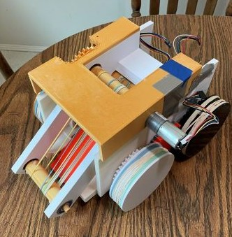

|  |
ME507 Hungry Hungry Robot
|
Welcome to the documentation for the ME 507 Spring 2023 Hungry Hippo Robot made by Scott Brown and Ben Elkayam
A picture containing font, graphics, graphic design, design
Description automatically generatedMEMORANDUM
TO:
Charlie Revfem, Lecturer, Mechanical Engineering
FROM:
Ben Elkayam, Scott Brown - ME 507
COPIES:
None
SUBJECT:
Term Project Final Memo
Shape
Introduction
The course, ME 507 – Mechanical Control System Design, is structured such that a term project is completed at the end of the quarter. This spring, the term project was to design a ‘Hungry Hippo’ robot whose purpose was to autonomously find and collect balls of a predetermined color and then either drop them into the robot’s home base or launch them into the central collection area – a raised cylindrical container. The term project must include a custom designed PCB, code to run the microcontroller (a STM32F411), and a physical robot.
The team’s initial design and competition strategy was to use two motors to drive the robot in a tank drive fashion, with another motor to collect the balls by drawing them in with a conveyor belt and another two motors to drive a flywheel mechanism to launch the balls into the central collection area. The initial sensor layout was to include a mounted front-facing camera to find balls by searching in a range of colors, an IMU to determine the robot’s orientation (using the sensors integrated magnetometer), a set of line following sensors to assist in positioning the robot, an ultrasonic sensor to not run into obstacles, and a Bluetooth module to wirelessly set a dead man’s switch to disable the robot. Additionally, the drive motors and conveyor motor would be fitted with an encoder to read the current position of the motors.
As the project scope crystallized and the team made headway in communicating with the sensors, it became clear that to properly compete, a reassessment of the necessary sensors would be required. An early lesson in the project was learned when it was discovered that the camera sensor would be incapable of acquiring the data for the given bandwidth of the communication system. The team then decided to use another team’s global camera system, colloquially referred to as the ‘Eye-of-God’ as it was positioned above the competition field, which would relay robot and ball position to any requesting teams. This alteration in the sensor’s would additionally retire the need for the IMU, ultrasonic, and line following sensors, as the robot position could actively be fetched from the overhead camera. This change necessitated a more robust Bluetooth system which would send not only a signal to kill the robot, but also various other types of information requested. A greater discussion of all sensors is covered in the memo’s following sections.
The design of the robot and PCB underwent many changes as the team received feedback from Mr. Revfem and other engineers. The ball collection mechanism was perhaps the most often altered design, as it had to fit within the term project’s size constraints. The PCB would face edits as the team learned how to design printed circuit boards in class and determine the requisite electrical components necessary. A greater discussion of the PCB is found in the project hardware section of this memo. Additionally, various errors in the design of the robot and PCB required an enterprising design philosophy to correct any issues that arose in construction and testing.
The final robot (fig. 1) kept the same base functionality of the project initial scope – two motors to drive the robot, and another to pick up balls – and the implementation of the overhead camera and robust Bluetooth communication system allowed for a more streamlined sensor interface. The many alterations made to the robot contributed to the success of the project and was an effective teaching instrument for a project of such ambitious scope. Along the project timeline many valuable lessons were learned (as will be discussed in the conclusion of this memo) which contributed to the final design of the robot and will no doubt influence the teams’ design philosophy on future projects.
A picture containing book, indoor, office supplies, wooden
Description automatically generated
Figure 1: Term Project Final Design
Project Hardware
The robot design process was tumultuous and had pivoted several for two specific reasons. The Design either pivoted due to the choice of intake or pivoted due to the choice of sensors. The physical intake design went through 3 primary iterations. The first design during the conceptual phase was going to be a vacuum system that will indiscriminately suck up balls and leave the sorting to later. The second design involved a complex system that used two angled vertical belts to intake balls, and the last iteration just utilized one of these belts and compressed the ball against a large ramp. The sensor pivoting did not have as large of an effect on the robot design, but it did determine some of the chassis' design, with locations to fit line sensors on the robot, despite them not being utilized.
The design pictured below (fig. 2a) is the final iteration of the physical design with a large, high-volume chassis to maximize our design space and a take drive driven by two motors. The novel design feature of the robot is that the tank drive had 4WD due to the gear train incorporated onto the side of the robot. The team incorporated this to enable the robot’s drive motors to not have to fight the static slip of the front wheels. Ultimately due to the chunky design, the robot ended up being a little too heavy to properly drive around, which indicates that in future iterations a more skeletal chassis should be incorporated.
Figure 2a: Final Project CAD
Pictured below (fig. 2b) is the final intake design: a single roller belt intake, large ramp and an integrated rear roller at the top of the ramp for shooting. To minimize the number of motors used, this entire design is driven off one motor. The choice to minimize motors made most of the previous intake designs a very difficult packaging challenge. This design was by far the easiest to package and still enabled us to intake and shoot on the same system. However, the ability to intake was compromised as the ramp is not an active system so occasionally balls will get stuck on the ramp's bottom lip.
Figure 2b: Final Project Ball Intake
In terms of learning from physical design, a decent portion of the design time was devoted to planning and testing 3D printed gear meshes. The team would generally recommend utilizing the SolidWorks toolbox to generate 3D printed gears for actuation usage. Because of our entirely 3D printed design, the gears can easily be incorporated onto shafts and wheels making assembly almost plug and play. The manufacturing process for the design relied entirely on 3D printing and the team leveraged their home and campus 3D printing resources to print the robot. The general process was to print bite sized components and press-fit or glue them together in order to minimize print time and printer bed space. The only exception to this process was the primary part of the chassis which was a massive 37-hour print.
In terms of hardware on the robot, the primary items to consider are the bearings, motors, batteries and other miscellaneous components. To ensure a smooth rotation for all of the robots actuating components, the team made sure to integrate bearings at all rotation points. All shafts on the robot sit on 10mm bearings which enabled us to have a standard shaft size. For the actuators and drive motors on the Robot, we used 3 identical motors which are the DFRobot 350 RPM motors. The team decided on these motors primarily because they offered a desirable torque/speed situation based on their gearbox, had an incorporated encoder, and where the maximum can size allowed by the competition rules. They functioned similarly to the motors used in ME 405 so it was easy for the team to implement them. The motors themselves were approximately operating at 60-watts. This is fine for our drivetrain, but it breaches the maximum wattage capacity for our intake system, for this reason we operated our intake at 75% its maximum PWM reducing it to less than the 50-watt maximum.
Concerning the team’s Battery selection, the team desired small lightweight batteries as the planned round lengths for the robots was intended to be around 2 minutes. We roughly determined that our maximum consumption would be around 4.5 Amps for all the sensors and motors on the robot, which we used as our discharge baseline. Selecting a battery of 650-mAh would give us about 8 to 10 minutes of operation which is more than what we need per round. Anticipating possible issues, we purchased two 650 mAh batteries.
Components that were not included in the CAD but are critical to the robot design are rubber bands. Both the drive wheels and the roller belt intakes work off classical office rubber bands. The rubber bands are used to actuate the non-driven belt roller and are also used to provide traction on the 3D printed wheels.
As described in the introduction, the robot underwent many design iterations regarding the utilization of sensors. The initial suite of sensors: ultrasonic, camera, line following, and IMU - were chosen to provide a complete knowledge of the playing field but were transitioned away from. The primary motivation from pivoting from the initial sensor selection to the overhead camera arose from an issue in correctly procuring the correct vision system.
The camera we purchased, the Arducam UC-806, was chosen due to its I2C communication protocol and low resolution – we believed that all data of the camera would be transferred through the I2C lines, and more than a week was spent trying to pull any image data from the camera. After this time, it became clear that the camera was designed to send image data through the MIPI CSI2 serial line – this option, while technically possible on the STm32F411, was not feasible due to the microcontroller’s limited storage and the PCB’s limited pinout availability, meaning that if the Arducam was to be chosen, many other sensors must be forfeit. Therefore, the use of the Arducam was terminated to select a better suited vision system. Two clear options presented themselves, using the Pixy Cam2 – a camera with a built-in vision system which another team was using to detect balls - or using the overhead camera under construction by another team. Both options were invested in, but ultimately the overhead camera was chosen as the vision system.
The overhead camera presented the advantages of not only knowing the position of the balls, but also the robots, and home base – all which were elements previously to be accounted for by the suite of additional sensors we chose. This choice then allowed for greater focus on the mechanical control systems as most of the data processing would come from the Bluetooth connection to the overhead camera. This additionally freed up much of the designed pinouts of the PCB as the only peripherals attached to the PCB were the motors and Bluetooth module.
The implementation of Bluetooth communication was not as easy as anticipated. Despite being “plug and play” in the end, there is a significant amount of technical know-how that must be developed before the Bluetooth devices can reach that point. The primary issue is that the documentation of the modules is often obscure and additionally the assignment of pins on the microcontroller is paramount to its function. Some pins, when setup to an alternate function, may say so in software, but in the physical hardware will not function as specified. The team's original plan was to implement the Bluetooth on the USART1 port, only to discover that within our configuration, the pin assigned to RX on that port was not actually capable of RX function. This forced us to utilize our USART2 port originally reserved for serial wire communication, however it works fine using either serial or Bluetooth on that port.
The use of the IMU sensor was pursued prior to the implementation of overhead camera, and the magnetometer was demonstrated to read the current orientation of the robot. As listed above, this sensor was phased out due to the applicability of the overhead camera.
The PCB (fig. 2c) can be broken into two portions – the power distribution components, and the controller/sensor integration. The PCB (and subsequently the robot) was powered by an 11.1V LiPo battery; the battery’s voltage must be stepped down to power the MCU and various sensors. For this application, two voltage regulators where chosen, one to step from 12V to 5V, and the other to step from 5V to 3V3. This system was effective and needed a small fix to adjust the voltage drop to the first regulator and needed a wire connecting the 3V3 output to the VDD plain on the PCB. These two fixes were quick and effectively created a power distribution portion of the board.
Figure 2C: PCB Physical Render
The controller component of the board was not effective. An unknown error occurred in which the MCU on the board (STM32F411) was unable to connect to the STLink and therefore could not be programmed. Through hours of troubleshooting, no fix for this error was found – even removing the MCU and soldering another to the board did not allow for programming. Luckily, the PCB was designed with pin headers for every pin on the MCU, giving us the ability to connect a Blackpill to the PCB.
Several issues surrounding the Blackpill connection did give the team cause for headaches. The pin headers purchased were machine pin headers and not traditional pin headers; the machine pin headers are designed to interface between the male and female machine headers, which we only purchased the male headers. These provided a very loose connection to the female headers in class and several times the project had to be paused to troubleshoot faulty connections.
Additionally, a catastrophic error occurred twice in which we destroyed the two Blackpills we had purchased, lucking a third was found which we used on the day of the project demo. The first of the Blackpills broke seemingly randomly. After effectively testing the connections between the PCB and the Blackpill the night before – and running motors through the PCB – the Blackpill stopped working the next day after running another test on the motors. As only three connections between the PCB and Blackpill existed during the test (two pinouts and the ground plane), we were perplexed as to how this occurred. We then reached out to various electrical engineers at Cal Poly for advice on how this may have occurred and how to avoid such a situation in the future. While no clear answers existed, we attached diodes to all pins to the motor controllers (as maybe parasitic voltage crept from the motor controller ICs into the Blackpill) and made sure to keep the Blackpill and PCB clean (we believe the issue most likely stemmed from a dirty Blackpill and/or PCB). The second Blackpill was found inoperative the morning of the project demo. We believe this was due to the team incorrectly unplugging the battery from the PCB, causing a voltage spike in the Blackpill. We resolved to disconnect the board next in such a way to prevent such voltage spikes.
The hardware portion of the project provided a plethora of knowledge on mechanical and electrical design, especially as this was our first time designing a PCB – making the class a valuable well of knowledge on such an interesting (and very extensive) subject.
Project Software
The software of the robot is broken into two main sections, the first being the main functions which control the robot, and the data processing interrupt which receives data from the Bluetooth module.
The huart2 interrupt callback function, which process the data the Bluetooth module receives, takes in a string of variable length, reads the first two characters (which set the various flags which controls the main function), then reads buffer following the characters – the buffer stops processing data once a new line character,
, is received. The interrupt then processes the data in the buffer and sends it out as an integer.
The main consists of an infinite loop cycling through the various states the robot can be in (fig. 4a): moving forward or backward, turning the robot, setting the dead man’s switch, and two sections for debugging the motors and encoders respectively. All states are activated by the various flags set by the data processing interrupt, for example the motor positional system turns both drive motors to drive in the same direction, with a PI controller setting the PWM of the motors depending on the values in the buffer, which contains the distance from the robot to the ball. This format is shared with the angular controller state, which turns the robot to face the required ball (the math behind this is discussed in the project modeling section) by driving each motor in the same direction to turn, which is done by following a PI controller. The kill command is activated by the kill flag set in the interrupt and turns the motors off and then breaks the robot out of the main function, rendering it immobile.
Figure 4a: Project Finite State Machine
Additionally, both the IMU and the Arducam had code written to pull data from the sensors. However, because we did not include these sensors, this code was not finished nor is it present in the current build of the project.
Laptop Sided Software:
The ultimate control goal of the robot was to get it to interface with the overhead arena camera (dubbed “Eye of God or EOG”. A large motivator for the Bluetooth implementation was to have an easily accessible two-way communication for the continuous data streaming from EOG. The data processing occurring on the computer was relatively minor as the team wanted to keep all PI loops contained within the robot’s controls system as that philosophy seemed more in line with the original scope of the project. The laptop would connect to the EOG hotspot and using a python script would pull data from the flask socket via the request's library. The data would come in JSON format and would be immediately decoded into a dictionary containing each competition relevant object (balls and robots) on the field and all their relevant positional data. The script would then use its methods to determine which robot is the team's robot and set the closest ball as the target ball. Lastly, the program would then transmit:
The X Position of the Robot
The Y Position of the Robot
The Orientation of the Robot (In degrees)
The DelX to the Target Ball from the Robot X
The DelY to the Target Ball from the Robot Y
The X and Y positions were the pixel values of the EOG. This data would all be continuously streamed as single characters with 0.01 second gaps between each of the five possible data points.
A difficulty the team encountered while trying to get the Bluetooth operating as a two-way RF device for both the contiguous data streaming and the dead man’s switch utility is that taking input into a single terminal will pause the data stream while input is being entered. The novel feature the team used to compensate for this was the implementation of multithreading. The computer-sided python program developed (main.py on GitHub) has three independent threads to handle various input and output data types. The threads are reserved respectively for continuous data streaming, terminal inputs, and lastly a UI window with a convenient and user-friendly kill button. The advantage of multi-threading allowed all these channels to operate independently and provide the team with a robust platform for debugging and streaming data.
Project Modeling
To send usable data to the robot from the Bluetooth module, the value of the Bluetooth buffer is converted into an integer by taking the most-significant-digit from the buffer, multiplying it by ten, and then adding the next buffer value to this integer. This process is repeated until the character pointer runs into a new line character, ‘
’, at which the program halts this process. If the buffer value is negative, the third character in the buffer must be a minus sign, and if so, a scalar flag is raised which adjusts the buffer pointer by one character, and then repeats the process above. This scalar flag then multiplies the buffer value by -1.
Depending on the flags set by the huart2 interrupt, the desired position or desired angle are calculated later in the interrupt. If a new position has been set, the robot calculates the new distance it is required to travel by using the Pythagorean theorem to find the shortest travel distance. To change the orientation of the robot, the difference in angle is calculated by taking the arctan of the ratio of the ball’s x and y positions and subtracting by the robot’s current orientation.
As discussed above, both the angular and positional control systems use positional controllers to drive the robot to the correct position. The systems are nearly identical, they take in the value from the buffer, find the error from the difference between that value and the first motor’s encoder (only one encoder is read as both motor is sent the same PWM value), then applies both a proportional and integral gain to the error. This value is to serve as the PWM signal to the motors - if this value is greater than 127 or less than -128 it is capped at the respective value. The value is then converted to ticks by multiplying by 4799/128 where 4799 is the maximum PWM value of the motor’s timer channel. This PWM value is then sent to the motors, if the robot is turning both motors receive the identical value, but if it is driving, the one motor receives the original value and the other receives a processed PWM to drive the motor in the same direction. If the error calculated is non-zero, the motors are continuously driven until a steady state is reached.
The angular and positional control systems are structured in such a way that the angular controller takes precedent over the positional controller. This is due to our design philosophy of reducing the complexity of each task. By following a turn-then-move system, complexity is reduced, although the system does face a drawback because of the lack of efficiency of the controller.
The calculations and design philosophy seem robust, but the team did not have the time to troubleshoot the math. With more time available greater calibration and troubleshooting would have occurred.
Accomplishments for the Current Iteration:
There are several things that the team is proud of concerning the current design and would like to clearly outline them here.
Mechanical:
A completely assembled robot with functional actuation on test day
Gear meshes and belt systems actuated with no issue
Electrical:
All the PCB’s power rails (12v, 5v, 3.3v) worked with no issue
All the motor controllers worked with no issue
Contingency breakout board pins came in clutch
Software:
Very effective data processing, streaming and interpreting
Deadmans switch works as intended ‘
PI loops for drive motors are well tuned and work well
Improvements for a Future Iteration:
There are numerous improvements the team would like to include on a future iteration of the design in both mechanical, electrical, and programming aspects.
Mechanical:
Lighten the Design as its very heavy
Use Mechanum or Omni-wheels to reduce turning friction
Make the entire intake an active system rather than part active (roller) and part passive (ramp)
Electrical:
Make the PCB capable of hosting and flashing code to an STM32 on it
Improve labeling on certain portions of the board
Make pin outs on the PCB more generalized rather than assigning devices
Software:
Create some form of RC/WASD control for the robot
Implement a more robust cooperative multi-tasking system
Conclusion
The term project necessitated a wide area of work across the quarter, new skills were learned (PCB design and programming in C), and old skills were refined (mechanical and electrical design, programming logic, etc.). With such a large project scope it was clear that much of the work done would not be finished to our satisfaction, so we had to prioritize the success of base functionality first. This gave us a strong definition of the project moving forward, and we believe this contributed strongly to our success.
The PCB design portion of the project yielded many lessons on not just how to design and construct a PCB – new skills we developed in class – but also the more abstract lessons of project design and how to effectively pick and procure components. Many issues were derived from incorrect part requisition, emphasizing the importance of practicing extreme care in part selection. There were some areas in which errors arose without clear indications of their cause. Our inability to interface with the PCB’s MCU has repeatedly confounded us as the construction of the board was very precise. The most plausible error may be a short underneath the board, thereby connecting two or more pins. Frustration occurred as this problem was repeated for the replacement MCU we used –motivating our use of the external Blackpill. The Blackpill provided its own headaches due to the team breaking two devices, especially the first Blackpill in which it simply stopped working and no clear errors occurred.
We are very proud of the work we accomplished for the term project. Countless hours went into the assignment and while not every avenue of work was effective or yielded results, the numerous lessons learned have strongly influenced us and provided us with a well of knowledge to draw upon for future projects.
...